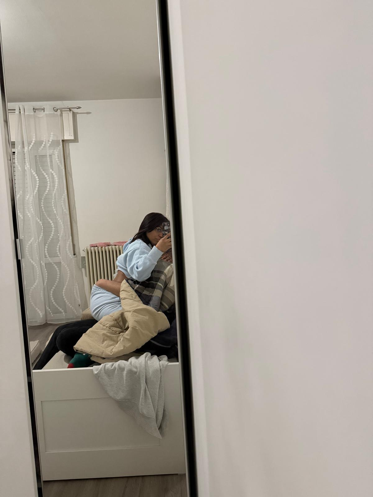
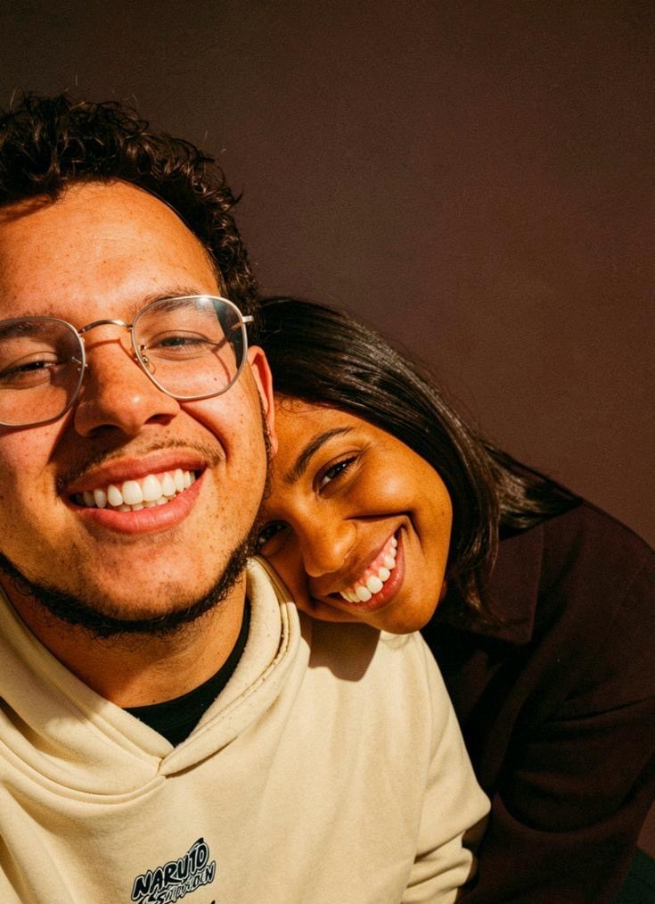
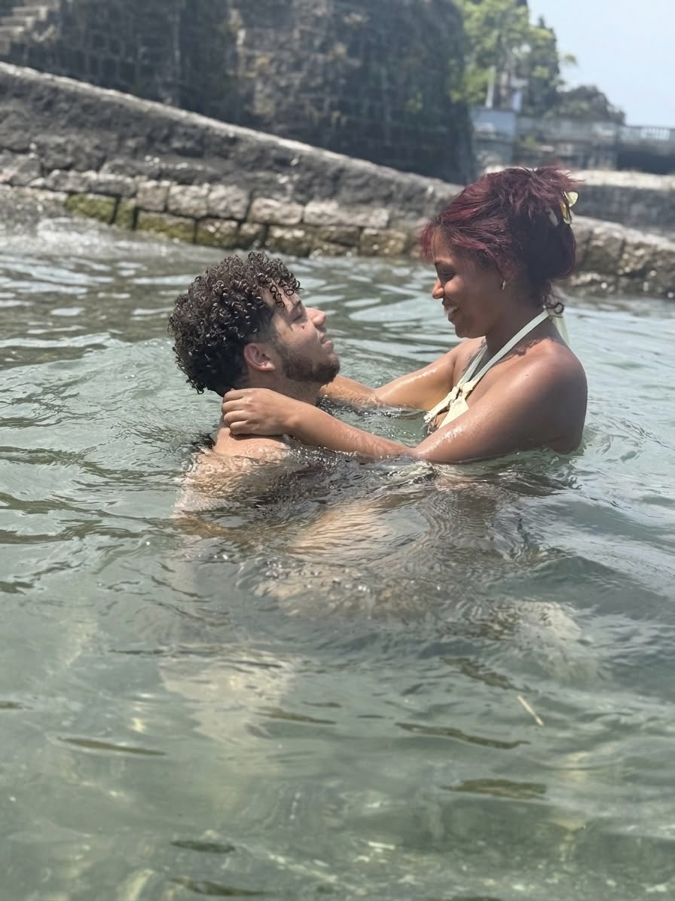
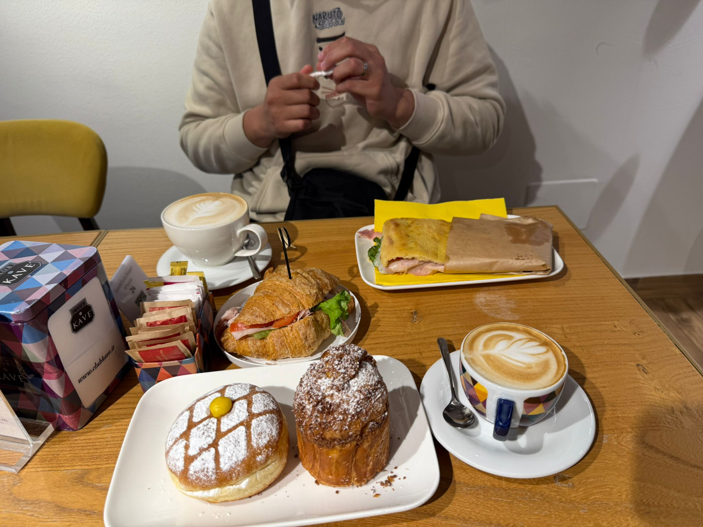
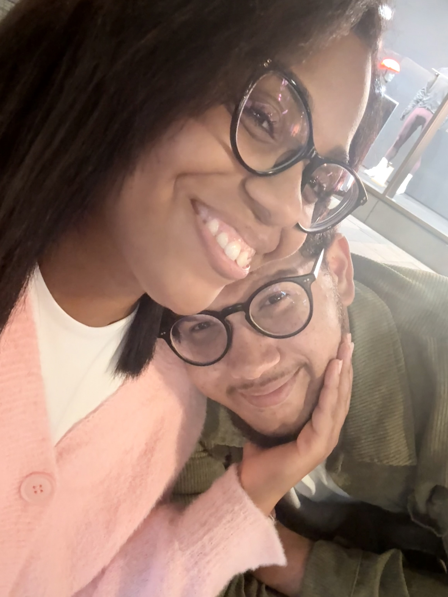
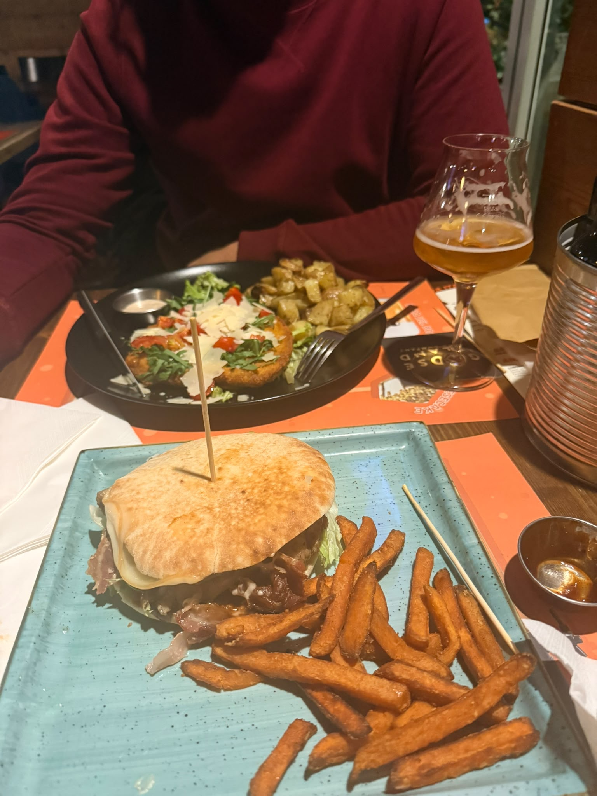

EL COMIENZO
El día en que empezó todo
Hay personas que, sin saberlo, unen dos caminos. En nuestra historia, Vitico tiene un lugar especial, porque gracias a él nos conocimos.

El comienzo de todo01 · NUESTRA HISTORIA
16 NOVEMBRE 2025 — 16 NOVEMBRE 2026
DENNYS & DARINET
365 días después, volvería a elegirte.
PER TE, AMORE MIO
Nuestra historia comenzó de una manera que nunca olvidaré, gracias a Vitico. Y, sin darnos cuenta, empezó algo que hoy se ha convertido en una de las partes más bonitas de mi vida.
Este primer año me ha enseñado que el amor no vive solamente en los grandes momentos. También está en las conversaciones, en la paciencia, en aprender a comprendernos y en seguir eligiéndonos cada día.
Con te, anche i giorni semplici diventano speciali.
PICCOLI MOMENTI, GRANDI RICORDI
No necesito recordar cada fecha para saber cuáles son los momentos que llevo en el corazón.
EL COMIENZO
Hay personas que, sin saberlo, unen dos caminos. En nuestra historia, Vitico tiene un lugar especial, porque gracias a él nos conocimos.

DICIEMBRE 2025
La primera Navidad juntos. De esos recuerdos que se quedan conmigo, no por lo extraordinarios, sino por la alegría de compartirlos contigo.

UN RECUERDO MUY PERSONAL
Recuerdo ese momento en el que me permitiste conocer una parte más vulnerable de ti. Entendí que amar también significa escuchar, acompañar y cuidar la confianza que alguien deposita en nosotros.

Y nuestra historia apenas comienza…
UN ANNO INSIEME
ALBUM DEI RICORDI
Lo haría una y otra vez, solo por vivirlos contigo.






Cada fotografía guarda una historia. Y todavía nos quedan muchísimas por vivir.
LE COSE CHE AMO DI TE
Esa energía explosiva, auténtica y tan tuya que hace imposible que pases desapercibida.
Amas con intensidad y con el corazón entero. Eso es algo que admiro profundamente.
Siempre encuentras una manera de ayudar. A veces pareciera que tu corazón no sabe decir que no.
Gracias por permitirme conocerte incluso en los días en que mostrar lo que sientes no es fácil.
No te amo porque seas perfecta.
Te amo porque eres tú.
UNA LETTERA PER TE
Hay palabras que merecen escribirse con calma.
Para Darinet, amore mio.
Oggi festeggiamo il nostro primo anniversario e, anche se sembra incredibile quanto velocemente sia passato il tempo, quando ripenso a tutto ciò che abbiamo vissuto insieme, mi rendo conto di quanto siano stati importanti per me questi 365 giorni.
Vorrei trovare le parole perfette per descriverti tutto quello che provo per te, ma credo che nemmeno le parole più belle del mondo sarebbero sufficienti per esprimere quanto ti amo e quanto sono grato a Dio per averti messa sulla mia strada.
Con te ho scoperto che amare non significa soltanto dire "ti amo", ma scegliere ogni giorno la stessa persona, anche nei momenti difficili. E io, amore mio, sceglierei te altre mille volte.
So di non essere perfetto, che a volte sbaglio e che non sempre riesco a dimostrarti tutto il mio amore. Ma voglio che tu sappia che ogni giorno desidero diventare una persona migliore, per me, per te e per il futuro che sogniamo insieme.
Grazie per ogni sorriso, ogni abbraccio, ogni momento condiviso e per essere sempre al mio fianco. Sei la mia felicità, la mia serenità e una delle cose più belle che la vita mi abbia regalato.
Quando penso al futuro, immagino tanti momenti ancora da vivere, sogni da realizzare e difficoltà da superare insieme. E la cosa più bella è sapere che voglio vivere tutto questo con te.
Prego Dio affinché continui a guidarci, a proteggerci e a rendere il nostro amore sempre più forte.
Oggi celebriamo il nostro primo anno, ma spero con tutto il cuore che sia soltanto il primo di tantissimi altri.
Se potessi scegliere ancora, sceglierei te.
Feliz primer aniversario, mi amor. Esto apenas comienza.
Con todo mi amor,
Dennys
Il primo di tanti anni insieme.
16 · 11 · 2026 — Dennys
Volver al principio ↑